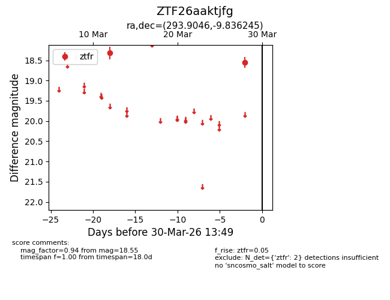
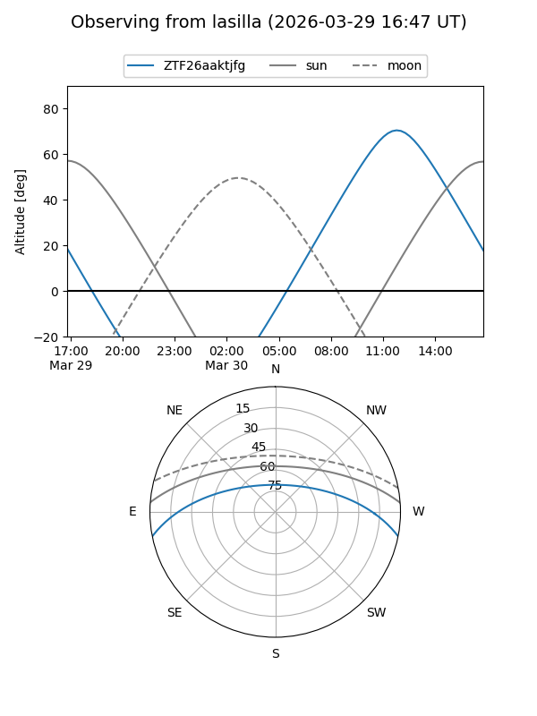
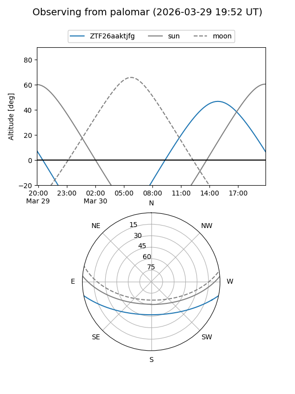

ZTF26aaktjfg
Target ZTF26aaktjfg at 2026-03-30 13:53
Aliases and brokers:
FINK: link
Lasair: link
ALeRCE: link
alt names
ZTF26aaktjfg (ztf,fink_ztf)
Coordinates:
equatorial (ra, dec) = 293.9046,-9.83624
equatorial (HMS+DMS) = 19:35:37.11,-09:50:10.48
galactic (l, b) = (29.0297,-14.23484)
Flags:
Photometry:
last ztfr=18.55
2 ztfr detections
Lightcurve

Visibility


Additional plots